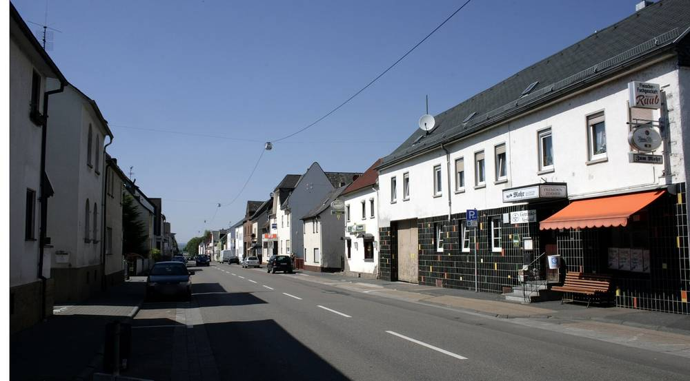

독일 림부르크 린터 태양광단지, 주민 참여 약속이 계약서에 빠져 위원회가 보완 요구

시민 지분 "15%만 현실적" 대 "최대 23%" 협의 중…16일 시의회까지 문구 명시하기로
독일 림부르크 시의회 건설위원회가 린터 지구의 고속도로변 태양광단지 사업에서 주민 참여가 계약서에 빠진 점을 문제 삼아 보완을 요구했다. 약 21헥타르 규모의 이 단지는 에너지공급사 EVL이 2027년에 지어 전기를 팔 예정이고, 린터 지구위원회는 주민이 협동조합 지분을 사 이자로 수익을 나누는 시민참여를 요구해 왔다. 5일 위원회에서 시와 EVL의 도시계획 계약에 시민참여 조항이 없다는 지적이 CDU와 녹색당에서 나왔고, 일정 지연 우려로 계획 단계 안건은 큰 표차로 가결됐다. 이에 따라 16일 시의회까지 계약에 시민참여 문구를 분명히 넣고 에너지협동조합 선택지를 문서로 의원들에게 제공하기로 했다. 시 집행부 안에는 부지와 설비의 최대 23%를 시민에게 넘길 수 있다고 적혀 있으나 EVL 대표 마르틴 에르틀은 15%만 현실적이라는 입장으로, 두 숫자는 아직 협의 중이다. 시가 EVL 지분의 50% 넘게 쥔 가운데, 시 계획과장이 "금융 참여를 제공할 의향" 정도의 문구를 제안했지만 야당 측은 실속 없는 표현이라며 받아들이지 않았다.
시민에너지 관점
시가 EVL 지분 50% 넘게 가진 사업에서도 시민 몫이 15%냐 최대 23%냐로 갈리고, 계약서에는 한 줄도 없었다는 점이 약속과 문서의 거리를 보여 준다. 협동조합 설립이 번거롭고 일정이 늦어질 수 있다는 우려는 에너지협동조합과 협동은행의 기존 틀을 쓰겠다는 선택지로 풀 수 있고, 위원회가 연기 대신 가결하고 문구를 보완한 것도 같은 방향이다. 주민이 지분을 갖고 이자로 수익을 나눠야 단지에 대한 동의가 쌓이고 이익이 지역에 남는다. 한국도 이익공유 조례와 인허가 조건을 만들 때 참여 비율과 방식을 '약속'이 아니라 '조항'으로 적어야 한다.
출처: Mittelhessen 2026-11-06 Stefan Carsten Dickmann 원문 보기
ドイツ・リンブルク、リンターの太陽光団地で住民参加の約束が契約書に欠落、委員会が補完を要求
市民持分「15％だけが現実的」対「最大23％」を協議中…16日の市議会までに文言を明記へ
ドイツ・リンブルク市議会の建設委員会が、リンター地区の高速道路沿いの太陽光団地事業で、住民参加が契約書に盛り込まれていない点を問題視し、補完を求めた。約21ヘクタールのこの団地はエネルギー供給会社EVLが2027年に建設して電力を販売する予定で、リンター地区委員会は、住民が協同組合の持分を買い利子で収益を分け合う市民参加を求めてきた。5日の委員会で、市とEVLの都市計画契約に市民参加の条項がないとの指摘がCDUと緑の党から出たが、遅れへの懸念から計画段階の議案は大差で可決された。これを受け、16日の市議会までに契約へ市民参加の文言を明確に入れ、エネルギー協同組合の選択肢を文書で議員に示すことになった。市執行部の案には敷地と設備の最大23％を市民に移せると書かれているが、EVL代表のマルティン・エルトル氏は15％だけが現実的との立場で、二つの数字はまだ協議中だ。市がEVLの50％超の持分を持つなか、市の計画課長が「金融参加を提供する意向」程度の文言を提案したが、野党側は中身のない表現だとして受け入れなかった。
市民エネルギーの視点
市がEVLの50％超の持分を持つ事業でも、市民の取り分が15％か最大23％かで割れ、契約書には一行もなかったことは、約束と文書の距離を示している。協同組合の設立が面倒で日程が遅れかねないという懸念は、エネルギー協同組合や協同組合銀行の既存の枠組みを使う選択肢で解消でき、委員会が延期ではなく可決して文言を補うことにしたのも同じ方向だ。住民が持分を持ち利子で収益を分けてこそ、団地への同意が積み上がり、利益が地域に残る。韓国も利益共有条例や許認可条件をつくるとき、参加の割合と方法を「約束」ではなく「条項」として書くべきだ。
出典: Mittelhessen 2026-11-06 Stefan Carsten Dickmann 原文を読む
德国林堡林特光伏园区居民参与承诺未写入合同，委员会要求补充
市民持股"仅15%现实"对"最高23%"仍在协商…16日市议会前明确写入条文
德国林堡市议会建设委员会指出，林特（Linter）街区高速公路旁光伏园区项目的合同中缺少居民参与条款，要求补充。该园区面积约21公顷，由能源供应商EVL计划于2027年建成并售电，林特街区委员会一直要求实行市民参与，即居民购买合作社股份、以利息分享收益。在5日的委员会上，基民盟（CDU）和绿党指出市政府与EVL的城市规划合同中没有市民参与条款，但出于对延误的担忧，规划阶段的议案仍以较大票差获得通过。据此，16日市议会前将在合同中明确写入市民参与条文，并以书面形式向议员提供能源合作社的选项。市政府方案写明可把土地和设备的最高23%转让给市民，但EVL负责人Martin Ertl认为只有15%现实，这两个数字仍在协商之中。在市政府持有EVL超过50%股份的情况下，市规划科长提出"愿意提供金融参与"这类措辞，但反对派认为表述空洞，不予接受。
市民能源视角
即使在市政府持有EVL过半股份的项目中，市民份额仍在15%与最高23%之间摇摆，合同里却一个字也没有，这说明承诺与文件之间的距离。有人担心成立合作社麻烦、会拖延进度，这可以通过利用能源合作社和合作银行的现有框架来化解，委员会选择通过议案并补充条文而非延期，也是同一方向。居民持股并以利息分享收益，才能积累对园区的认同，让利益留在当地。韩国在制定利益共享条例和审批条件时，也应把参与比例和方式写成"条款"，而不是"承诺"。
来源: Mittelhessen 2026-11-06 Stefan Carsten Dickmann 查看原文
Germany's Linter Solar Park in Limburg Lacks Resident Participation in Contract, Committee Demands Fix
Citizen stake of "only 15% realistic" versus "up to 23%" under discussion... wording to be spelled out by the 16th council session
The building committee of Limburg's city council has demanded changes after finding that resident participation is missing from the contract for a solar park beside the motorway in the Linter district of Germany. The roughly 21-hectare park is to be built in 2027 by the energy supplier EVL, which will sell the power, and Linter's district committee has asked for citizen participation in which residents buy cooperative shares and share the income as interest. At the committee meeting on the 5th, the CDU and the Greens pointed out that the city's urban-planning contract with EVL has no citizen-participation clause, but out of concern about delays the planning-stage item passed by a wide margin. As a result, the city will state citizen participation clearly in the contract by the council session on the 16th and give councillors the energy-cooperative options in writing. The city executive's draft says up to 23% of the land and equipment could be transferred to citizens, while EVL chief Martin Ertl says only 15% is realistic, and the two figures are still under discussion. With the city holding more than 50% of EVL, the city's planning head proposed wording along the lines of "willingness to provide financial participation," but opposition members rejected it as empty.
Citizen Energy View
Even in a project where the city holds more than 50% of EVL, the citizen share swings between 15% and up to 23% while the contract says nothing, showing the gap between a promise and a document. The worry that setting up a cooperative is cumbersome and could cause delay can be answered by using existing energy cooperatives and cooperative banks, and the committee's choice to pass the item and fix the wording rather than postpone points the same way. Only when residents hold shares and share income as interest does consent to a park build up and the benefit stay local. When Korea drafts benefit-sharing ordinances and permit conditions, it should write the participation ratio and method as a clause, not a promise.
Source: Mittelhessen 2026-11-06 Stefan Carsten Dickmann Read the original